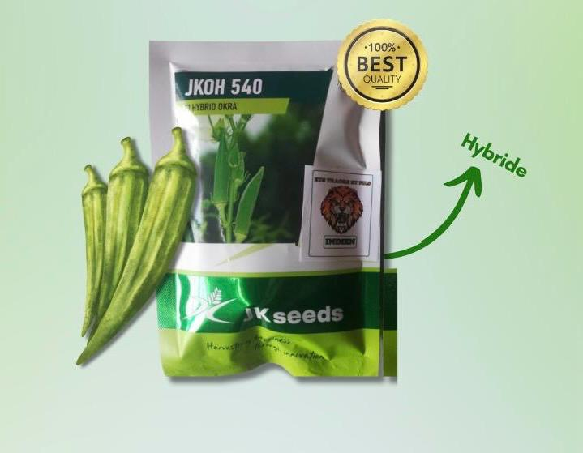
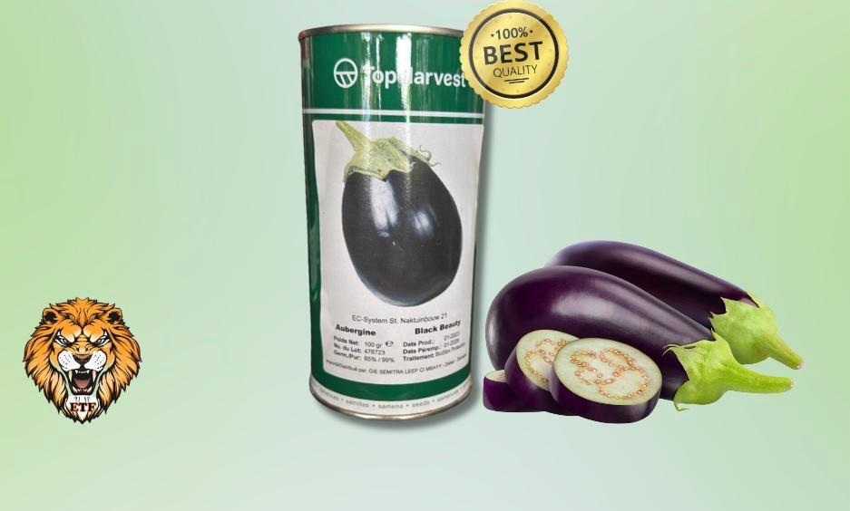
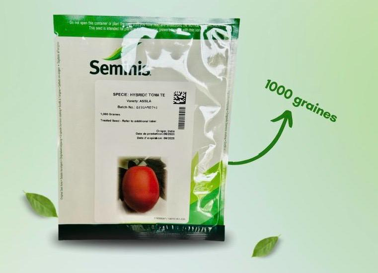
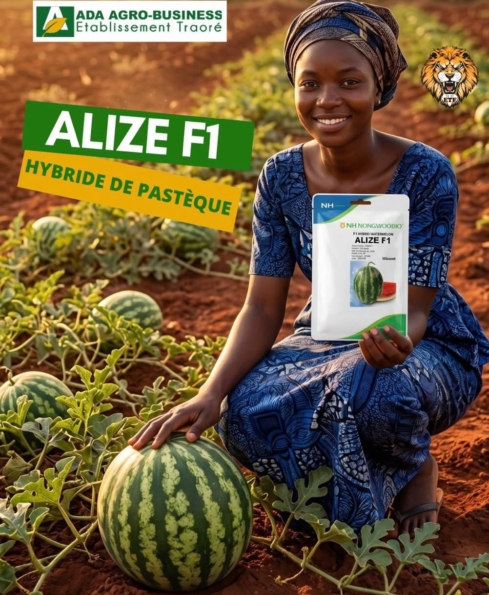
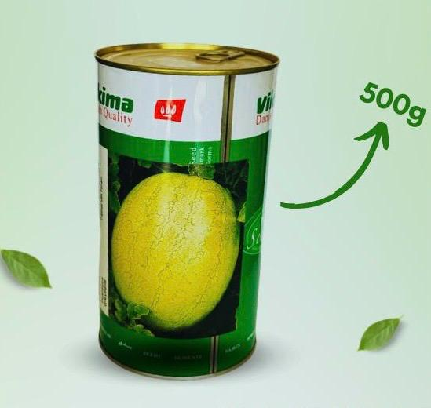
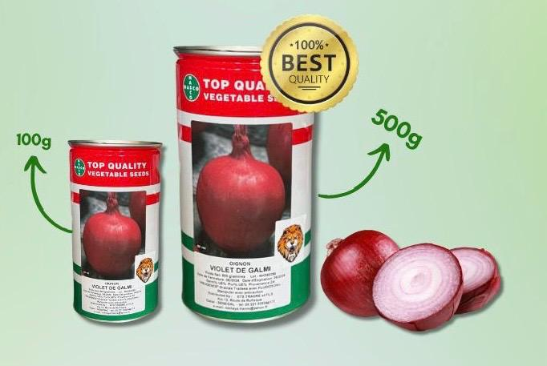
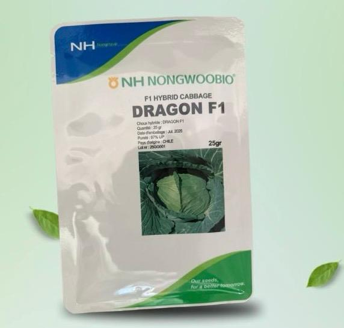
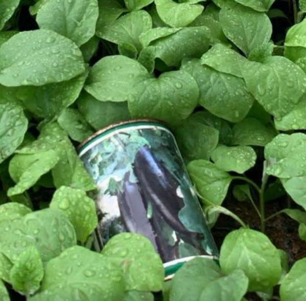

C'est une variété Espagnole réputée pour sa saveur douce, sucrée et sa couleur rouge violacée
Adapté aux régions à hivers doux, il produit de gros bulbes ronds (6-8CM) très compacts, excellents pour la conservation (plus de 6 mois)
Idéal cru en salade ou cuit
Semence agricole
LAITUE EDEN
Caractéristiques :
C'est une laitue de type ICEBERG qui possède une excellente résistance aux fortes températures
Forme une grosse pomme bien compacte et se conserve bien après récolte
Semence agricole
POIVRON GOLIATH
Caractéristiques :
Elle est supérieure aux variétés traditionnelles
GOLIATH est très vigoureux et est faisable durant toute l'année

Semence agricole
GOMBO HYBRIDE JKOH 540
Caractéristiques :
Très bonne tolérance à la chaleur et aux maladies
Rendement exceptionnel et précoce
Idéal pour une culture commerciale et des récoltes abondantes
Semence agricole
CYNODON DACTYLON
Caractéristiques :
C'est une graminée vivace tropicale idéale pour les climats chauds et secs, réputée pour sa très haute résistance à la sécheresse, au piétinement et sa capacité d'auto réparation
Il forme un gazon dense et fin, parfait pour les zones ensoleillées, les terrains de sport et les jardins nécessitant peu d'eau

Semence agricole
AUBERGINE BLACK BEAUTY
Caractéristiques :
C'est une variété vigoureuse
Chair crémeuse, douce et sans amerthume
Couleur noir violacé, peau très brillante, forme ovoide à cotelée, de 13-19 cm de long
Semence agricole
CHOUX TROPICANA HYBRIDE
Caractéristiques :
C'est une variété hybride
Idéal pour sa capacité de devenir performant en saison chaude et humide

Semence agricole
TOMATE ASSILA
Caractéristiques :
Elle offre des atouts appréciables aux cultivateurs
Elle est très productive et ses fruits peuvent peuser 100 à 150 GRS chacune
Semence agricole
MAIS HYBRIDE JKMH 45
Caractéristiques :
Potentiel de rendement élevé
Hybride stable avec une large adaptabilité
Tolérant aux maladies
Adapté aux sols légers et tolérant une certaine variabilité climatique
Semence agricole
MIL JKBH 26
Caractéristiques :
Rendement élevé en grain et en fourage sec
Hybride, stable et très résistant
Tolérant aux maladies
Semence agricole
CHOUX ORDINAIRE MARCHE DE COPENHAGUE
Caractéristiques :
C'est une variété ancienne rustique, au feuillage peu développé, vert clair et lisse
Produit des pommes rondes, compactes très grosses
Peuvent peser jusqu'à environ 1 à 1.5 KG
Qualité gustative excellente
Semence agricole
PAPAYE F1 GORTEX
Caractéristiques :
Une variété hybride de papaye, de type Sud-Est asiatique
Le poids moyen des fruits est d'environ 1 KG
Avec une saveur très forte et a une teneur élevée en sucre 13%

Semence agricole
ALIZE F1
Caractéristiques :
Elle donne des pastèques juteuses, sucrées et de gros calibre
Elle a une très grande productivité et est très résistante
Elle garantit des fruits d'une qualité exceptionnnelle

Semence agricole
PASTEQUE GREY BELL VIKIMA
Caractéristiques :
C'est une variété très productive
Les poids des fruits peut varier entre 11 à 13 KGS

Semence agricole
OIGNON VIOLET DE GALMI
Caractéristiques :
IL nous vient de région tropicale
Il est cultivable en saison sèche et fraiche
Cette variété est très résistible aux maladies et a un rendement exceptionnel

Semence agricole
CHOU HYBRIDE DRAGON
Caractéristiques :
C'est une variété issue du coisements entre 2 variétés de choux dans le but d'obtenir une variété plus résistante
Il est très résistants face aux maladies et est très productif
Adapté à des conditions climatiques particulières telles que: la chaleur et le froid
Semence agricole
PIMENT BOMBARDIER
Caractéristiques :
Très haut rendement
Haute tolérance aux virus
Excellente tenue après récolte
Semence agricole
TOMATE MONGAL F1
Caractéristiques :
Potentiel de production très élevé avec une floraison groupée
Tolérant à la chaleur
Le poids des fruits varie entre 150-180 GRS
Semence agricole
POIVRON SIMBAD F1
Caractéristiques :
Plante vigoureuse avec une excellente couverture foliaire
Capable de supporter une charge de fruits importante
Rendement très élevé avec une production continue sur une longue période

Semence agricole
AUBERGINE KALENDA F1
Caractéristiques :
Plante puissante, érigée et très productive
Montre une bonne tolérance générale aux maladies fongiques courantes du feuillage
Sa fermeté en fait une variété de choix pour les circuits commerciaux longs (Résistance au transport)